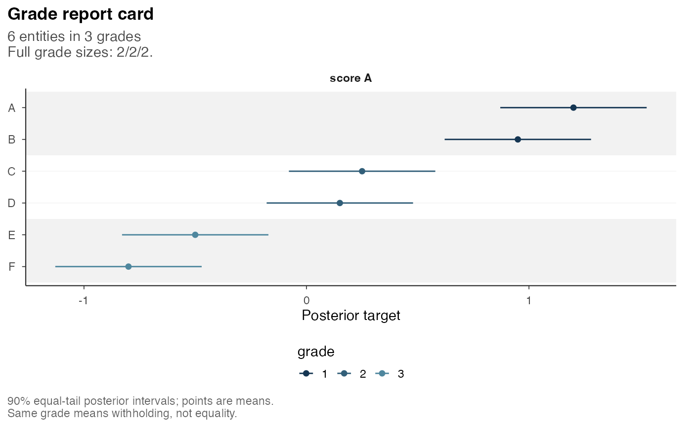
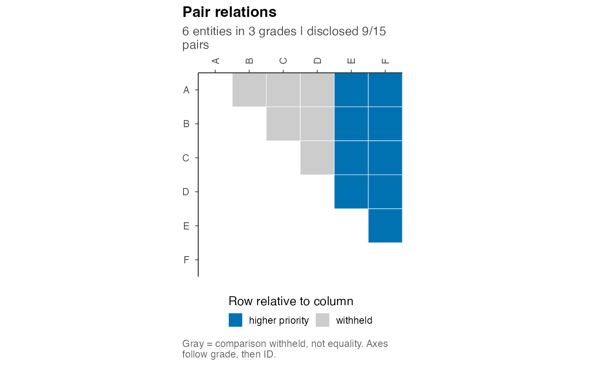

Draw a Stored postrank Result with autoplot
reexports.Rdautoplot() (re-exported from ggplot2::autoplot()) dispatches stored
postrank objects to the matching postrank_plot_*() function and returns a
ggplot object. Base R plot() uses the same dispatch, prints the figure,
and returns the ggplot invisibly. Neither method solves or computes new
posterior summaries.
Usage
autoplot(object, ...)Arguments
- object
A
postrank_analysis,postrank_fit,postrank_report_card,postrank_baseline,postrank_frontier,postrank_commonality_cost, orpostrank_comparison.- ...
Arguments passed on to the target plotting function. Analyses and fits accept
typeto select the figure; other arguments (such asncolorview) follow the targetpostrank_plot_*()function.
Value
For supported postrank classes, a ggplot object (plot() returns
it invisibly after printing).
Details
Dispatch by class:
postrank_analysis:type = "report_card"(default),"relations","profile", or"pairwise".postrank_fit:type = "relations"(default),"profile", or"pairwise".postrank_report_card:postrank_plot_report_card().postrank_baseline:postrank_plot_relations().postrank_frontier:postrank_plot_frontier().postrank_commonality_cost:postrank_plot_commonality().postrank_comparison:postrank_plot_compare().
Objects missing a report card or checked grading return the same status
ggplot as the underlying postrank_plot_*() function, while
type = "pairwise" remains available on fits without grades.
Examples
one <- postrank_example("tutorial_one")
autoplot(one)

Open full-size figure
two <- postrank_example("tutorial_two")
autoplot(two, type = "relations")

Open full-size figure